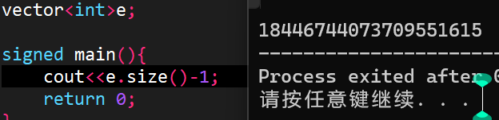

考前注意¶
考前碧月，考后羞花
铭记¶
记录自己犯过的错！
-
#define int long long是把int替换为long long,不要写反 -
请注意不要暴空间! \(5000\times5000\) 最大了!!
-
多组数据一定要init！！检查STL和数组，变量是否清空！！eg.https://www.luogu.com.cn/problem/B3614
-
不能写
!a%3！，取反优先级大于取余！（备注：!a当a=0或false时值为1，其余时值为0） -
size()返回unsigned，如果size为0那么\(size-1=2\times INT_{MAX}\)，访问越界所以RE

-
一定要把
cerr注释掉！不会WA但是会TLE！！！ -
不要用
if(sqrt(j)*sqrt(j)==j)cout<<'!';判定完全平方数 -
开栈！不然一下代码在跑的时候能过编，但直接死循环不让输入，原因是在进入out()函数时开的node a爆栈了。但是它不会让你跑到这个函数再re，而是一开始直接就re
string sa,sb;
struct node{
int res[N];//define为ll ，压8位
int len;
};
node init(string s){
//..
}
inline void out(node a){
cerr<<a.len<<endl;
printf("%lld",a.res[a.len]);
for(int i=a.len-1;i;i--)printf("%08lld",a.res[i]);
}
signed main(){
cin>>sa;
node a=init(sa);
out(a);
return 0;
}
bool f1;
int ans,a[N<<2];
bool f2;
signed main(){
printf("the size of your code is %lf MiB",1.00*((&f2)-(&f1))/1024/1024);
return 0;
}
-
洛谷评测机跑线段树类型题目可以跑\(O(2e7)~700ms\)
-
注意数组越界！尽量开大，但也不要爆空间
-
2^n可以用1<<n代替
-
交题不要交错！！
-
输出使用时间的代码
auto start = chrono::high_resolution_clock::now();
work();
auto end = chrono::high_resolution_clock::now();
cerr << "time: " << chrono::duration<double, milli>(end - start).count() << "ms" << endl;
-
检查**inf（如求min时ans的初始值inf）是否够大**，需不需要1e18
-
注意自己是输出！不要最末尾又多输出了一个空的ans！！删代码要删干净！！
-
模块化写代码后注意不同区域的变量/数组会不会重名！！
-
/* 吾日三省吾身： 你排序了吗？ 你取模了吗？ 你用%lld输出long long 了吗？ 1LL<<x写对了吗？ 判断=0用了abs()吗？ 算组合数判了a<b吗？ 线段树build()了吗？ .size()加了(signed)吗？ 树链剖分的DFS序是在第二次更新的吗？ NTT逆变换除了项数吗？ */
-
注意不要爆空间！略超空间不会导致MLE但会TLE（基本会让运行时间\(\times 1.5\)）
-
映射请使用
unordered_map而不要使用map！！时间可能会\(\times 10\) -
看清楚数据大小！别把3e5写成2e5
-
并查集要记得初始化
-
多测清空不要用memset，可以用栈记录修改的位置。
-
不要memset(a,-INF,sizeof a)，如果不确定请输出里面值看看！！！
-
看清楚MOD的值！！在复杂度允许下多取模（取模复杂度较大，但不卡常就不怕）
-
floating point exception的问题原因：可能是除0或者%0
-
！！如果怕取模出问题，那么就在输出时把(ans%MOD+MOD)%MOD（推荐）
-
注意不同的数组开的空间不一样！比如**存边的和存点的数组**大小就不一样。
-
考场上第一件事把编译器的O2打开！！！不然有一些时候RE检查不出来！！！
-
注意for是先加再检查。看看下面的代码是什么问题？
for(int i=1;i<=40&&x[i]<=INF&&y[i]<=INF;i++){
x[i]=2*x[i-1]+bx,y[i]=2*y[i-1]+by;cnt++;
}
//答案：x[i],y[i]一直是0！！因为先加，再判断，再修改！
-
注意枚举模拟时还原初始状态！！！
-
如果发现看错了题目，那么一定要在改代码时不要漏掉没改
-
不要懒！有时间就测大样例！有多少测多少
-
编译防数组越界和整型越界：编译选项https://zhuanlan.zhihu.com/p/578225802
-
注意结构体重载运算符
struct node{
int w;
bool operator < (const node &b) const{//如果是b[1]<b[2]，相当于调用了b[1]的<，把b[2]作为参数传入。那么括号内的就是b[2]，括号外的就是b[1]
return w < b.w;
}
}b[N];
main(){
b[1].w=1;b[2].w=2;
if(b[1]<b[2])cout<<"OK";
else cout<<"NO";
}
//output: OK
-
判 UB:
-fsanitize=address,leak,undefined,signed-integer-overflow！ -
别memset INF！！一定会WA！！除非用0x3f
-
写另外的题目时记得修改模数！别忘了！
-
注意即时访问map空节点也会产生新内存占用！因此即使map为空，从1到inf扫一边还是会MLE。解决方法：访问后如果是0，
则先无此函数！erase清空，然后不时shink_to_fit压缩内存 -
不能根据度数为1来确定叶子节点！！度数为1不代表叶子节点！！
-
注意对double数组memset不能为INF=0x3f！而应该是0x7f。万金油就是输出看看！！
-
注意double×double可能会冒出科学计数法！要整体强制转换为int才行，错误写法
(int)ceil(1.00*n/a)*ceil(1.00*m/a)，正确写法(int)(ceil(1.00*n/a)*ceil(1.00*m/a)) -
多测记得清空，特别是vector存图时要清空vector，会MLE，WA
-
不要把快读和同步流cin一起用！会WA！
-
注意不要对double使用快读！！
-
注意玄学！

三个rd并排，第一个输入的数字却作为第3个参数传入！

-
注意节点开始的编号！
-
一种奇怪的MLE方法：dfs死循环导致爆栈MLE
-
再次提醒别除0！检查每一个除法是否有除0的可能。每一次写代码都要检查特别是打比赛！
-
在进行数组复用时，注意这个数组当前是否被占用了！（练习 | 这人怎么天天刷题啊（old）城市环路）
-
注意，虽然会忽略行末空格和文件末尾换行，但是中间的换行不会忽略！别多输出了！会WA
-
当要潘判断两数大小，其中有一个数字可能超过LL时，可以将其转化为double
-
递归到一半停了？不知道为什么dfs超时了？（复杂度正确）——检查爆栈吧！（P2152）注意dfs时新建的栈占用！
-
离散化注意前面的要-a-1，二分时不需要-1.大多数情况都不-1没毛病，但总有挂的时候。（AT_joisc2014_c）
-
无论看上去有没有影响，不要让线段树越界！（南外 -600pts）
-
#define int long long对运行时间有较大影响（30%） -
结构体内定义的数组初始值非0
-
不要忘记删注释
-
大文件最好使用freopen，因为有些时候剪贴板会裁剪后面的一部分并且强制停止输入，导致输入不全！
-
使用快读时我们会默认用cin输入char和string。注意这个时候要去掉快读，改用解除同步流。同步流要在freopen之前
-
因为数组越界会造成严重错误，并且本机无法查出，所以写完后必须检查每一个中括号。
-
实在不会高精度的情况下，可以使用double，double可以去到1.7*10^{308}，精度玄学
-
把题目每一个字都看过去！不要从样例推题目！
-
离散化后注意那些是离散值，那些表示，不要把离散值和未离散值比较！
-
不要用并查集判重边！并查集是判联通用的！
-
注意在构建ST表时 j在外，i在内！
-
全局改__int128后记得把快读**快输**也改了
未验证的铭记¶
把看见的别人犯过的错都记录下来！！
- 字符型数组数不可以通过memset函数清0的， 因为即使只是把内存清空，也会引起翻车
交题前必查¶
-
再次提醒别除0！检查每一个除法是否有除0的可能。每一次写代码都要检查特别是打比赛！
-
INF范围，没有加法就开大
-
数组大小，不要小了或者大了。重点检查会不会小了！
-
检查返回值与函数类型的关系。
考前口诀¶
二分有等有加减。ans取mid在l更。
空间不大也别小，fre open别写错。
测试用建议编译命令：
g++ -Wall -O2 -std=c++14 -fsanitize=address,leak,undefined,signed-integer-overflow -o "%e" "%f"
编译命令¶
-static
此选项将禁止使用动态库，所以，编译出来的东西，一般都很大，也不需要什么动态连接库，就可以运行。
-fsanitize=address,leak,undefined,signed-integer-overflow
必备的好吧，但是会和static冲突，所以不能一起用。最后测试时记得先用-fsanitize检查，后用-static测试。
‐O2 ‐std=c++14 ‐static
测试标准命令
Windows编译常见问题¶
-
数组开太大会导致在线ide发生RE错误
-
如果在进入main()之前就发生了死循环，请考察是否爆栈
DevC++中
工具→编译选项，在编译时加入以下指令处打上勾，同时加入以下代码
-Wl,-stack=134217728
运算符优先级¶
优先级值越大，表示优先级越高。
| 优先级 | 分类 | 运算符 | 结合性 |
|---|---|---|---|
| 1 | 逗号运算符 | , | 从左到右 |
| 2 | 赋值运算符 | =、+=、-=、*=、/=、 %=、 >=、 <<=、&=、^=、 | = |
| 3 | 逻辑或 | ||
| 4 | 逻辑与 | && | 从左到右 |
| 5 | 按位或 | ||
| 6 | 按位异或 | ^ | 从左到右 |
| 7 | 按位与 | & | 从左到右 |
| 8 | 相等/不等 | ==、!= | 从左到右 |
| 9 | 关系运算符 | <、<=、>、>= | 从左到右 |
| 10 | 位移运算符 | <<、>> | 从左到右 |
| 11 | 加法/减法 | +、- | 从左到右 |
| 12 | 乘法/除法/取余 | *（乘号）、/、% | 从左到右 |
| 13 | 单目运算符 | !、*（指针）、& 、++、–、+（正号）、-（负号） | 从右到左 |
| 14 | 后缀运算符 | ( )、[ ]、-> | 从左到右 |
define用法¶
建议初期写第一种
//第一种写法,建议用于写函数,必须写成函数类型
#define add(x,y) (x+y)
#define rp(1,a,b) for(int i=1;i<=(a),i+=(b))
//第2种写法,"#n"可以将n转换为字符串嵌入
#define PXN(n) printf(" x"#n" \n")
//第3,##n可以将n与前面的部分联合起来
#define PXN(n) printf("%d\n",b##n)
注意，以下写法不可取
#define PXN(n) printf("##n\n",b2)//期望PXN(abc)>>输出字符串abc
#define PXN(n) printf("%d \n",b"#n")//期望PXN(2)>>输出b2的值
Notice¶

关于printf规定符¶
-
%d 十进制有符号整数
-
%u 十进制无符号整数
-
%f 浮点数
-
%s 字符串
-
%c 单个字符
-
%p 指针的值
-
%e 指数形式的浮点数
-
%x, %X 无符号以十六进制表示的整数
-
%o 无符号以八进制表示的整数
-
%g 把输出的值按照 %e 或者 %f 类型中输出长度较小的方式输出
-
%p 输出地址符
-
%lu 32位无符号整数
-
%llu 64位无符号整数
-
%% 输出百分号字符本身。
除了格式化说明符之外，printf() 函数还支持一些标志和选项，用于控制输出的精度、宽度、填充字符和对齐方式等。例如：
-
%-10s：左对齐并占用宽度为 10 的字符串；
-
%5.2f：右对齐并占用宽度为 5，保留两位小数的浮点数；
-
%#x：输出带有 0x 前缀的十六进制数。
编译技巧¶
没有Dev-c++，仅有 Sublime怎么编译运行？
方法1：再找一遍Dev-c++¶
方法2：使用命令行进行编译¶
编辑一个 run.bat 内容如下
```Plain Text g++ a.cpp -o out.exe out.exe
其中`a.cpp`为源文件名称
然后就可以在命令行里输入啦
那么怎么样查看输出呢？
很简单，一种是在代码里加入暂停的代码（具体的自行百度）
```C++
system("pause");//仅限Windows
//或者在程序末尾添加一个输入。

还有一种是**输出到文件**
用freopen即可
字符串与数字转换¶
DEBUG代码¶
const bool OPEN_DEBUG = true;
template <typename T,typename... Args>
void DEBUG(bool flg,T s,Args... args) {
if constexpr (OPEN_DEBUG){
cout << s;
if constexpr (sizeof...(Args))
DEBUG(flg,args...);
}
}
#define zerol = 1
#ifdef zerol
#define cdbg(x...) do { cerr << #x << " -> "; err(x); } while (0)
void err() { cerr << endl; }
template<template<typename...> class T, typename t, typename... A>
void err(T<t> a, A... x) { for (auto v: a) cerr << v << ' '; err(x...); }
template<typename T, typename... A>
void err(T a, A... x) { cerr << a << ' '; err(x...); }
#else
#define dbg(...)
#endif